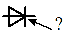
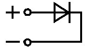
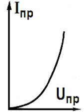
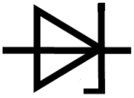
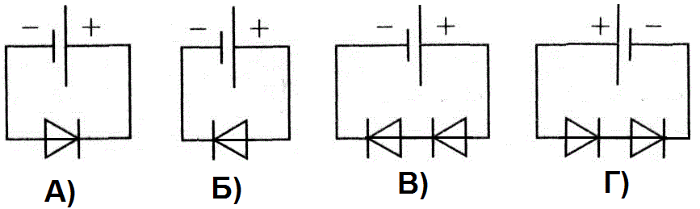
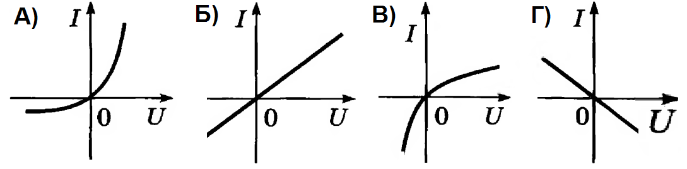

1. Какой параметр характеризует выпрямительный диод?
2. Как называется данный вывод полупроводникового диода?

3. Какое включение полупроводникового диода изображено на рисунке?

4. Какое минимальное прямое напряжение необходимо приложить к выводам диода, чтобы открыть его?
5. Как называется график представленный на рисунке?

6. Условное обозначение какого элемента схемы изображено на рисунке?

7. В каких единицах измеряется напряжение пробоя диода?
8. Какое вещество используется для изготовления современных диодов?
9. Полупроводниковый диод служит для ...
10. В каком варианте включения полупроводниковых диодов в электрическую цепь с одним и тем же источником тока сила тока в цепи будет иметь минимальное значение?

11. Какой из графиков зависимости силы тока от напряжения соответствует вольт-амперной характеристике полупроводникового диода?

12. Какую величину (приблизительно) имеет падение напряжения на выпрямительном диоде при его прямом включении к источнику напряжения 10 В?